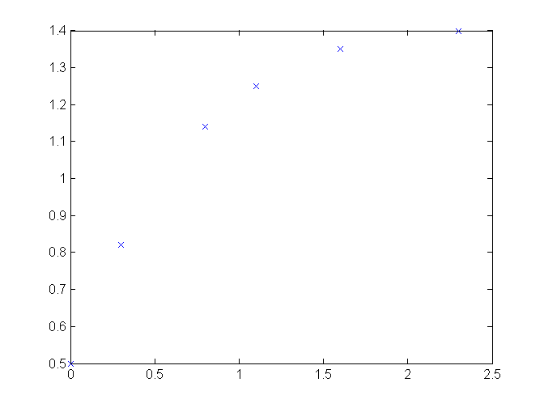
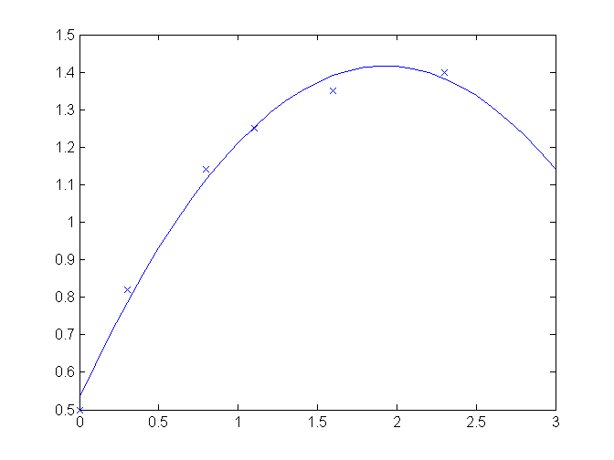
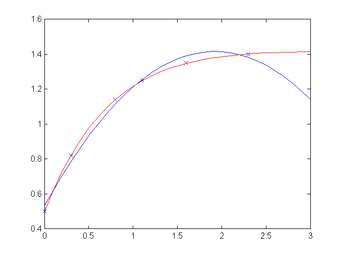
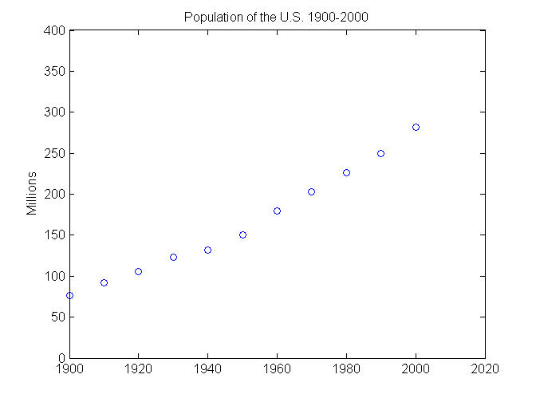
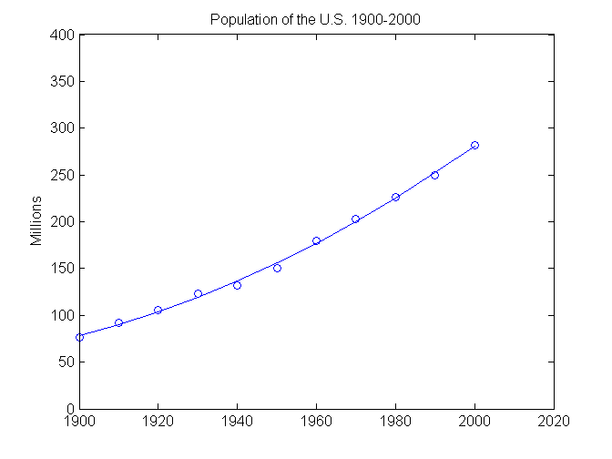

Regression
Contents
Exercise 1
Assume we have the following data, make a fit: y=c0+c1*exp(-t)+c2*t*exp(-t)
t=[0 .3 .8 1.1 1.6 2.3]';
y=[.5 .82 1.14 1.25 1.35 1.4]';
plot(t,y,'x')
 Polynomial fit:
A=[ones(size(t)) t t.^2]; c=A\y
c =
0.5318
0.9191
-0.2387
Evaluate at equally spaced point and plot
T=(0:.1:3)';
Y=[ones(size(T)) T T.^2]*c;
hold on
plot(T,Y)
figure(gcf)
 Linear in the parameters y=c0+c1*exp(-t)+c2*t*exp(-t)
A1=[ones(size(t)) exp(-t) t.*exp(-t)];
c1=A1\y;
Y1=[ones(size(T)) exp(-T) T.*exp(-T)]*c1;
plot(T,Y1,'r')
figure(gcf)
 Exercise 2 Make a quadratic fit and calculate the singular values of the design matrix
Here is the US Census data from 1900 to 2000.
% Time interval clear all t = (1900:10:2000)'; % Population usp = [75.995 91.972 105.711 123.203 131.669 ... 150.697 179.323 203.212 226.505 249.633 281.422]'; % Plot plot(t,usp,'bo'); axis([1900 2020 0 400]); title('Population of the U.S. 1900-2000'); ylabel('Millions'); hold on
Manual polynomial fit and svd
N=length(t); A=[ones(N,1) t t.^2] c=A\usp; plot(t,A*c)
A =
1 1900 3610000
1 1910 3648100
1 1920 3686400
1 1930 3724900
1 1940 3763600
1 1950 3802500
1 1960 3841600
1 1970 3880900
1 1980 3920400
1 1990 3960100
1 2000 4000000
 s=svd(A);
s(1)
ans = 1.2621e+007
s(2)
ans = 104.7815
s(3)
ans = 7.7045e-004